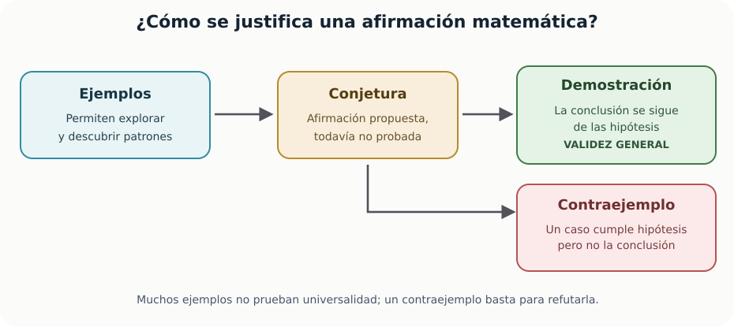

Capítulo cero. Antes de calcular: ¿qué significa resolver un problema?
← Introducción. Un problema que vuelve a aparecer · Índice del libro · Siguiente →
Imaginemos que se nos pide hallar todos los números reales cuyo cuadrado sea cuatro. Podemos empezar por el dos: al multiplicarlo por sí mismo obtenemos cuatro, de modo que ya tenemos una respuesta que cumple la condición. Antes de dar por terminado el trabajo, probemos con su opuesto. El producto de menos dos por menos dos también es cuatro; al escribir ambos valores aparece una cuestión que la primera cuenta había dejado abierta: cómo asegurarnos de haber encontrado todos los números pedidos.
La palabra «todos» nos obliga a avanzar un poco más. Probar con otros números podría ayudarnos a explorar, pero cada comprobación hablaría únicamente del valor elegido. Necesitamos una razón que abarque a cualquier número que cumpla la condición. Podemos buscarla transformando la igualdad hasta reconocer un producto cuyos factores indiquen las únicas posibilidades; para hacerlo tendremos que saber qué propiedades permiten esa transformación y por qué se puede regresar de ella a la pregunta original.
Al recorrer ese argumento iremos dando nombre a varias tareas que aparecen al resolver problemas. Una solución es un objeto que satisface las condiciones planteadas, y resolver el problema exige justificar que la respuesta abarca lo que pide el enunciado. En nuestro ejemplo debemos encontrar todas las soluciones reales y demostrar que la lista está completa. Si la pregunta pidiera solo una, el dos bastaría; si pidiéramos un real cuyo cuadrado fuera menos cuatro, tendríamos que explicar por qué no existe.
Empezaremos con unas pocas herramientas escolares para poder desarrollar estas ideas en situaciones concretas. La igualdad inicial volverá enseguida, cuando dispongamos del producto que permite resolverla. Después cambiaremos algunas condiciones para estudiar qué sucede con los argumentos: veremos cuándo una comprobación alcanza, cómo se refuta una afirmación y qué debemos conservar al transformar una ecuación. Las diferencias entre esas tareas se irán haciendo visibles mientras trabajamos sobre ellas.

Una caja de herramientas para los primeros argumentos
Para volver a la igualdad del comienzo necesitamos una manera de transformar cuadrados en productos. La distributividad, \(a(b+c)=ab+ac\), permite abrir los paréntesis de un producto; si la aplicamos dos veces y reunimos los términos, obtenemos \((x-a)(x+a)=x^2-a^2\) y \((x+a)^2=x^2+2ax+a^2\). Podemos leer la primera identidad en sentido inverso: una diferencia de cuadrados queda escrita como producto de dos factores. Ese cambio de escritura será útil porque conocemos qué debe ocurrir cuando un producto de reales vale cero.
Supongamos que \(uv=0\). Si \(u=0\), ya tenemos un factor nulo; si \(u\ne0\), podemos dividir la igualdad por \(u\) y obtener \(v=0\). Los dos casos cubren todos los valores de \(u\), por lo que un producto real nulo tiene al menos un factor nulo. También podemos regresar: si cualquiera de los factores vale cero, el producto vale cero. Esta propiedad permitirá pasar de una ecuación factorizada a las posibilidades que debemos examinar.
Otros problemas nos pedirán razonar sobre enteros. Llamamos enteros al cero, a los números con los que contamos y a sus negativos. Un entero es par si es \(2k\) e impar si es \(2k+1\), con \(k\) entero; cada entero pertenece exactamente a una de estas dos clases. Escribirlos de esa manera permitirá conservar en una letra todos los casos que cumplen la misma condición. Los números reales incluyen también fracciones y longitudes como \(\sqrt2\); estudiaremos sus conjuntos y su orden en el capítulo siguiente.
Para comparar algunas de esas longitudes usaremos que un cuadrado real es no negativo. Cuando \(0\le a<b\), la identidad \(b^2-a^2=(b-a)(b+a)>0\) muestra que elevar al cuadrado conserva el orden entre números no negativos. La raíz \(\sqrt c\), para \(c\ge0\), nombra la raíz no negativa, de modo que esa comparación permitirá situarla entre dos valores conocidos. El símbolo \(|x-a|\) expresa la distancia de \(x\) a \(a\): vale \(x-a\) si \(x\ge a\) y \(a-x\) si \(x<a\). Por ello, pedir \(|x-a|<r\), con \(r>0\), equivale a situar \(x\) entre \(a-r\) y \(a+r\).
Los ejemplos geométricos se apoyarán en las fórmulas escolares del área del rectángulo y del triángulo, el teorema de Pitágoras y la suma angular del triángulo euclidiano. Adoptamos aquí esas propiedades y señalaremos cuándo se usan; sus demostraciones corresponden a los capítulos de geometría. También usaremos que un triángulo congruente a otro puede superponerse mediante un movimiento rígido y que, en consecuencia, conserva las longitudes de sus lados.
Herramientas que acabamos de justificar
Las letras representan números reales. Estas reglas reúnen las herramientas algebraicas iniciales; las fórmulas geométricas adoptadas se justificarán en los capítulos de geometría.
| Propiedad | Fórmula y condiciones de uso |
|---|---|
| Distributividad | \(a(b+c)=ab+ac\). |
| Diferencia de cuadrados | \((x-a)(x+a)=x^2-a^2\). |
| Cuadrado de una suma | \((x+a)^2=x^2+2ax+a^2\). |
| Producto nulo | \(uv=0\Longleftrightarrow u=0\text{ o }v=0\). |
| Cuadrado y signo | \(x^2\ge0\); si \(x\ne0\), entonces \(x^2>0\). |
| Comparación de cuadrados | Si \(0\le a<b\), entonces \(a^2<b^2\). |
| Distancia al centro | \(\lvert x-a\rvert<r\Longleftrightarrow a-r<x<a+r\), con \(r>0\). |
Pruebas. Apéndice: «Qué adoptamos y qué demostramos», «Productos de binomios, cuadrados y cubos», «Opuestos, inversos y productos nulos», «Signos y compatibilidad del orden», «Valor absoluto, distancia e intervalos».
Una igualdad no es todavía una respuesta
Regresemos a \(x^2=4\). La letra \(x\) representa el número que buscamos y la igualdad expresa la condición que debe cumplir. Llamamos solución a un número que vuelve verdadera esa condición al sustituirlo por \(x\). Ya hemos comprobado que dos y menos dos son soluciones; para saber si existen otras, podemos usar la diferencia de cuadrados:
\[ x^2=4 \quad\Longleftrightarrow\quad (x-2)(x+2)=0. \]
La propiedad del producto nulo obliga a que \(x-2=0\) o \(x+2=0\), de donde salen \(x=2\) y \(x=-2\). Cualquier solución de la igualdad inicial tiene que encontrarse entre esos dos valores, y ambos satisfacen la igualdad al comprobarlos. Hemos justificado así que el conjunto solución es \(\{-2,2\}\). La factorización permitió abarcar de una vez todas las posibilidades que las comprobaciones aisladas dejaban abiertas.
Al escribir «números reales» habíamos fijado el conjunto en el que buscábamos. Si el problema pidiera soluciones naturales, solo admitiríamos el dos; si pidiera enteros, conservaríamos ambos valores. Ese conjunto se llama dominio del problema. En adelante, cuando no se señale otro dominio, las ecuaciones elementales se interpretarán sobre los números reales.
Podemos modificar también lo que se pide sin cambiar los números de la igualdad. Encontrar un número que cumpla \(x^2=4\) queda resuelto al dar el dos; encontrar todos exige incluir menos dos y probar que la lista está completa. Preguntar si existe un real con \(x^2=-4\) nos lleva a examinar si la condición puede cumplirse, mientras que preguntar por la unicidad exige averiguar si dos soluciones podrían ser distintas. En nuestra primera igualdad, los valores dos y menos dos ya descartan que la solución sea única.
Problema 1. Una respuesta verdadera, pero incompleta
Enunciado. Se propone \(x=3\) como respuesta a \(x^2=9\). Examina la respuesta y encuentra todas las soluciones reales.
Solución. Sustituyendo \(x=3\) obtenemos \(3^2=9\); el candidato cumple la ecuación. Sin embargo, también \((-3)^2=9\). Factorizar permite demostrar que no hay más posibilidades:
\[x^2=9\ \Longleftrightarrow\ x^2-9=0\ \Longleftrightarrow\ (x-3)(x+3)=0.\]
El producto se anula exactamente cuando \(x=3\) o \(x=-3\). Comprobamos ambos en la ecuación inicial. Así, \(S=\{-3,3\}\). Si el problema solicitara una sola solución, \(3\) bastaría; para encontrar todas, no bastaba.
Problema 2. La pregunta puede no tener respuesta
Enunciado. Resolver \(x^2+1=0\) en los números reales.
Solución. Para todo real \(x\) se cumple \(x^2\ge 0\). Por tanto \(x^2+1\ge1>0\). Es imposible que la expresión sea cero: el conjunto solución es vacío, \(S=\varnothing\). Observar que la fórmula habitual de una cuadrática tiene discriminante negativo sería un diagnóstico correcto, pero nuestra desigualdad explica directamente por qué no hay soluciones reales. Más adelante veremos que, al ampliar el sistema numérico a los complejos, la respuesta cambia; cambiar de universo matemático exige decirlo.
Problema 3. Datos, incógnita y condiciones
Enunciado. Un rectángulo tiene perímetro \(20\,\mathrm{cm}\). ¿Cuál es su área?
Solución. Sean \(a,b>0\) los lados. Del perímetro sabemos que \(2a+2b=20\), es decir, \(a+b=10\). El área es \(A=ab\). Si \(a=4\) y \(b=6\), el área es \(24\,\mathrm{cm}^2\); si \(a=b=5\), el área es \(25\,\mathrm{cm}^2\). Dos rectángulos cumplen el dato y producen áreas distintas. La información no determina una única área. No hay un «fallo de cálculo»: el problema está subdeterminado. Pedir, en cambio, el área máxima sería una nueva pregunta que sí tiene solución, y se puede estudiar por métodos algebraicos.
Las palabras que determinan el alcance de una afirmación
Consideremos la oración «el cuadrado de un número es positivo». Las comprobaciones en \(2\) y \(-2\) dan cuadrados positivos, pero al incluir el cero obtenemos \(0^2=0\). Para abarcar todos los reales debemos afirmar que \(x^2\ge 0\): cada cuadrado es mayor o igual que cero. Si queremos conservar la conclusión estricta \(x^2>0\), la hipótesis debe restringirse a los reales \(x\ne0\). Al formular la afirmación elegimos conjuntamente el dominio de la variable y la conclusión que podemos justificar para cada uno de sus valores.
Cuando escribimos «para todo \(x\)», afirmamos que cada elemento del dominio declarado cumple la condición. «Existe un \(x\)» afirma que al menos un elemento la cumple. «Existe un único \(x\)» afirma la existencia de un elemento que la satisface y exige demostrar que cualquier otro que la satisfaga coincide con él.
Podemos entender estas expresiones antes de aprender sus símbolos. Cuando los encontremos, bastará recordar que \(\forall\) abrevia «para todo» y \(\exists\) abrevia «existe», y recordar que ambas expresiones siempre se interpretan respecto de un dominio.
Problema 4. ¿Se puede probar algo con un ejemplo?
Enunciado. Evalúa la afirmación «para todo real \(x\), \((x+1)^2>x^2\)». Si es falsa, encuentra cuándo sí es verdadera.
Solución. Probarla en \(x=1\) no basta: \((1+1)^2=4>1\). Para estudiar todos los reales restamos \(x^2\) a ambos lados y desarrollamos:
\[ \begin{aligned} (x+1)^2 &> x^2\\ &\Longleftrightarrow x^2+2x+1>x^2\\ &\Longleftrightarrow 2x+1>0. \end{aligned} \]
Se cumple exactamente cuando \(x>-\tfrac12\). El contraejemplo \(x=-1\) refuta la afirmación universal, pues \(0>1\) es falso. El cálculo no solo detectó el error: encontró el dominio preciso donde la comparación sí funciona.
Problema 5. La diferencia entre «existe» y «es único»
Enunciado. ¿Cuántos pares ordenados de números reales \((x,y)\) satisfacen \(x+y=10\)?
Solución. Para cada número real \(t\), el par \((t,10-t)\) satisface la ecuación. Como hay infinitos valores posibles de \(t\) y cada uno determina un par diferente, existen infinitas soluciones. Los pares \((0,10)\) y \((4,6)\) son dos ejemplos; la expresión \((t,10-t)\) muestra el conjunto completo. Si añadimos \(x=y\), entonces \(2x=10\) y el par queda determinado de manera única: \((5,5)\). La segunda condición altera esencialmente el problema.
Problema 6. Una conjetura seductora
Enunciado. Para \(n=0,1,2,3\) los números \(n^2+n+41\) son primos. ¿Se deduce que la expresión siempre produce primos al tomar enteros no negativos?
Solución. No. Los cuatro casos no agotan el dominio infinito de los enteros no negativos y no demuestran por sí solos la afirmación universal. En un dominio finito, comprobar todos los casos sí podría demostrarla. Un solo contraejemplo basta para refutarla. Con \(n=40\):
\[40^2+40+41=1600+81=1681=41^2,\]
que es compuesto. Los casos iniciales permitían reconocer una posibilidad y formular la conjetura; el valor cuarenta cumple las condiciones de entrada y produce un resultado que la contradice. Por eso resuelve la pregunta universal: la expresión puede producir números compuestos al tomar enteros no negativos. La exploración aportó la pregunta y el contraejemplo determinó su respuesta.
Si sucede esto, ¿debe suceder aquello?
Hay afirmaciones que describen una relación entre dos condiciones. «Si un entero es múltiplo de cuatro, entonces es par». En este caso la implicación es válida: si \(n=4k\), también \(n=2(2k)\), de manera que \(n\) es par. Pero no podemos dar por cierto su recíproco, «si un número es par, entonces es múltiplo de cuatro»; el número \(6\) es par y no es divisible entre cuatro.
Una condición suficiente para obtener una conclusión es una que garantiza esa conclusión. Ser múltiplo de cuatro es suficiente para ser par. Una condición necesaria es una que debe cumplirse cuando la conclusión se cumple: ser par es necesario para ser múltiplo de cuatro. Las palabras «necesario» y «suficiente» se entienden mejor cuando se conectan con una pregunta: ¿alcanza la condición para asegurar el resultado?, ¿es imprescindible que se cumpla?
Dos condiciones son equivalentes cuando cada una implica la otra. Escribimos \(A\Longleftrightarrow B\). Por ejemplo, sobre los reales, \(x^2=9\) es equivalente a \(|x|=3\). No lo es a \(x=3\), porque este último deja fuera \(x=-3\).
Problema 7. El recíproco no es automático
Enunciado. Para \(n\in\mathbb Z\), compara las afirmaciones: (a) «Si \(n\) es múltiplo de \(6\), entonces \(n\) es múltiplo de \(3\)»; (b) «Si \(n\) es múltiplo de \(3\), entonces \(n\) es múltiplo de \(6\)».
Solución. En (a), \(n=6k=3(2k)\) para algún entero \(k\), así que es múltiplo de tres. El argumento sirve para cualquier múltiplo de seis. La afirmación (b) es falsa: \(n=9\) es múltiplo de tres, pero no de seis. Un contraejemplo válido debe cumplir la hipótesis de la afirmación que se pretende refutar y desmentir su conclusión. Con esto hemos probado la primera proposición y refutado la segunda, no solo comparado ejemplos.
Problema 8. ¿Qué significa que una condición sea necesaria?
Enunciado. Una persona afirma: «Para que \(x^2=16\), es necesario que \(x=4\)». ¿Tiene razón?
Solución. No. \(x=-4\) cumple \(x^2=16\) sin ser \(4\). Decir que «\(x=4\) es necesario» significaría que toda solución debe ser \(4\), cosa falsa. Sí es una condición suficiente: si \(x=4\), necesariamente \(x^2=16\). En cambio, \(|x|=4\) es necesaria y suficiente para que \(x^2=16\), porque ambas condiciones tienen exactamente el mismo conjunto solución.
Problema 9. De un dibujo a una demostración
Enunciado. En un triángulo plano euclidiano, dos ángulos miden \(48^\circ\) y \(67^\circ\). Halla el tercero y explica de qué principio dependes.
Solución. Bajo la hipótesis de que trabajamos con un triángulo de geometría euclidiana, la suma de los ángulos interiores es \(180^\circ\). Por tanto el tercero mide
\[180^\circ-48^\circ-67^\circ=65^\circ.\]
El dibujo podría sugerir un valor próximo, pero la justificación está en la propiedad de la suma angular. No debemos inferir la medida exacta a partir del aspecto de una ilustración. Además, si se cambiara la geometría subyacente, sería necesario revisar la hipótesis de \(180^\circ\): una propiedad es tan general como las condiciones bajo las que fue probada.
Calcular sin perder ni inventar soluciones
En álgebra necesitamos modificar ecuaciones sin modificar inadvertidamente lo que estamos buscando. Sumar el mismo número a ambos miembros de una igualdad produce una ecuación equivalente. También podemos multiplicar ambos miembros por una constante distinta de cero, porque existe la operación inversa. Pero multiplicar por una cantidad que puede anularse, dividir por una expresión variable, elevar al cuadrado o extraer una raíz requieren cuidado.
Si la ecuación original es \(x^2=x\), alguien podría dividir por \(x\) y escribir \(x=1\). El resultado funciona, pero al dividir suponemos \(x\ne0\); hemos descartado inadvertidamente una solución. La factorización correcta es \(x(x-1)=0\), de donde \(x=0\) o \(x=1\).
Algo similar ocurre al elevar al cuadrado. De \(a=b\) se sigue \(a^2=b^2\); en cambio \(a^2=b^2\) solo asegura \(a=b\) o \(a=-b\). Una transformación puede conservar las soluciones originales y, a la vez, añadir candidatas falsas. Por eso, después de una cadena de pasos no reversibles, es indispensable volver al enunciado inicial.
Problema 10. La solución que desapareció al dividir
Enunciado. Una resolución de \(x^2=5x\) dice: «dividiendo por \(x\), obtenemos \(x=5\)». Examínala.
Solución. Dividir por \(x\) presupone que \(x\) es distinto de cero. Pero la ecuación original no lo excluye. Factorizando sin esa división:
\[x^2-5x=x(x-5)=0,\]
se obtienen \(x=0\) y \(x=5\). Comprobación: \(0^2=5\cdot0\) y \(5^2=5\cdot5\). La resolución citada no produjo una raíz falsa; perdió una raíz verdadera. Esta distinción importa: existen transformaciones que añaden soluciones y otras que las eliminan.
Problema 11. Una raíz espuria por elevar al cuadrado
Enunciado. Resolver \(\sqrt{x+1}=x-1\) en los reales.
Solución. La raíz exige \(x+1\ge0\), y su valor es no negativo. Como el lado derecho debe igualarla, se requiere además \(x-1\ge0\). Por tanto un candidato admisible debe cumplir \(x\ge1\). Al elevar al cuadrado se obtiene
\[x+1=(x-1)^2=x^2-2x+1,\]
es decir \(x^2-3x=0\), por lo que los candidatos son \(x=0\) y \(x=3\). El primero viola \(x\ge1\); en la ecuación inicial, \(\sqrt1=1\ne-1\). El segundo sí cumple: \(\sqrt4=2=3-1\). Conjunto solución \(S=\{3\}\). La cadena al cuadrado produjo candidatos, y la verificación eliminó uno espurio.
Problema 12. Dividir una desigualdad según el signo
Enunciado. Resuelve \(ax>a\) en la variable real \(x\), distinguiendo valores posibles del parámetro real \(a\).
Solución. Si \(a>0\), dividir por \(a\) conserva la desigualdad y resulta \(x>1\). Si \(a<0\), dividir por un número negativo invierte el signo y resulta \(x<1\). Si \(a=0\), la desigualdad se reduce a \(0>0\), que es falsa para todo \(x\): no hay soluciones. Así,
\[ S_a=\begin{cases} (1,\infty),&a>0,\\ (-\infty,1),&a<0,\\ \varnothing,&a=0. \end{cases} \]
No era posible dividir por \(a\) sin estudiar su signo y su posible nulidad. Una notación elegante no puede ocultar una hipótesis omitida.
Problema 13. El valor absoluto pide dos casos
Enunciado. Resolver \(|x-2|=3\) e interpretar el resultado.
Solución. La expresión \(|x-2|\) mide la distancia del número \(x\) al punto \(2\) de la recta real. Los puntos situados a distancia tres son \(5\) y \(-1\). Algebraicamente, \(|x-2|=3\) significa \(x-2=3\) o \(x-2=-3\). Así \(x=5\) o \(x=-1\). Comprobando: \(|5-2|=3\) y \(|-1-2|=3\). El valor absoluto no se elimina simplemente quitando las barras; se interpreta mediante una distancia o un análisis por casos.
Problema 14. Una igualdad puede valer para todos los valores
Enunciado. Compara \((x+2)^2=x^2+4x+4\) con \((x+2)^2=9\).
Solución. La primera igualdad es una identidad, una ecuación verdadera para todo valor de su dominio: desarrollar el cuadrado por distributividad produce la misma expresión para todo real \(x\). La segunda es una ecuación: su verdad depende de qué valor tome \(x\). Se resuelve como \(x+2=3\) o \(x+2=-3\), de donde \(x=1\) o \(x=-5\). Usar el mismo símbolo \(=\) no hace que todas las igualdades tengan la misma función matemática. El lector debe atender a qué se está afirmando, no solo a los signos.
Transformaciones y conservación de soluciones
Para expresiones reales definidas, la doble flecha exige que el paso pueda deshacerse. Si se usa una expresión variable como factor o divisor, la condición de que sea no nula debe cumplirse en el dominio considerado.
| Propiedad | Fórmula y condiciones de uso |
|---|---|
| Sumar a ambos miembros | \(A=B\Longleftrightarrow A+c=B+c\). |
| Multiplicar por un no nulo | \(A=B\Longleftrightarrow cA=cB\), si \(c\ne0\). |
| Dividir por un no nulo | \(A=B\Longleftrightarrow A/c=B/c\), si \(c\ne0\). Si el divisor puede anularse, ese caso se estudia aparte. |
| Elevar al cuadrado | \(A=B\Longrightarrow A^2=B^2\). La vuelta solo asegura \(A=B\) o \(A=-B\). |
| Raíz principal | \(\sqrt A=B\Longleftrightarrow A=B^2\text{ y }B\ge0\), con \(A\ge0\). La condición de signo evita las candidatas espurias. |
Pruebas. Apéndice: «Transformaciones que conservan una ecuación».
Demostrar: deducir una conclusión de sus hipótesis
Al explorar casos podemos encontrar un patrón y formular una conjetura. Una demostración es un argumento que deduce la conclusión de las hipótesis mediante pasos justificados por definiciones, propiedades admitidas o resultados ya establecidos. Su extensión depende del razonamiento necesario para abarcar el dominio del enunciado.
Por ejemplo, la suma de dos enteros impares es par. Podemos comprobar \(3+5=8\), \(7+9=16\) y otros cien ejemplos. La demostración, en cambio, parte de la definición: todo impar puede escribirse como \(2k+1\) para algún entero \(k\). Si tenemos dos impares \(2k+1\) y \(2m+1\), su suma es
\[ (2k+1)+(2m+1)=2(k+m+1), \]
que es el doble de un entero. Eso prueba el resultado para cualquier pareja de impares, sin necesidad de recorrerlas una por una.
Los ejemplos de sumas impares ayudaron a reconocer el patrón; la escritura general permitió seguirlo para cualquier pareja. Llamamos exploración al trabajo de buscar patrones y nuevas preguntas, y demostración al argumento que encadena inferencias justificadas desde las hipótesis hasta la conclusión. Cuando una afirmación universal falla, podemos resolver la cuestión mediante una refutación, exhibiendo un contraejemplo que cumpla sus hipótesis y contradiga su conclusión. La pregunta que estemos investigando determinará cuál de estas tareas necesitamos realizar.
Problema 15. Un resultado sobre enteros consecutivos
Enunciado. Demuestra que el producto de dos enteros consecutivos siempre es par.
Solución. Si \(n\) es par, \(n=2k\) para algún entero \(k\) y \(n(n+1)=2k(n+1)\) es par. Si \(n\) es impar, \(n=2k+1\) y entonces \(n+1=2(k+1)\) es par; de nuevo \(n(n+1)\) es múltiplo de dos. Como todo entero es par o impar, los dos casos agotan las posibilidades. La prueba explica por qué ningún entero es una excepción.
Problema 16. El valor de un contraejemplo geométrico
Enunciado. «Dos triángulos con la misma área son congruentes». ¿Verdadero o falso?
Solución. Es falso. Consideremos dos triángulos rectángulos: uno de catetos \(3\) y \(4\); otro de catetos \(2\) y \(6\). Sus áreas son
\[\frac{3\cdot4}{2}=6,\qquad \frac{2\cdot6}{2}=6.\]
Sin embargo, los conjuntos de longitudes de sus lados son distintos: el primero tiene lados \(3,4,5\); el segundo \(2,6,\sqrt{40}\). No pueden ser congruentes. Los dos cumplen la hipótesis «misma área» y contradicen la conclusión «congruentes»; por eso forman un contraejemplo válido. Un dibujo impreciso no sería suficiente para justificar la afirmación sobre congruencia.
Problema 17. Una demostración con letras
Enunciado. Demuestra que el cuadrado de un número entero impar también es impar.
Solución. Escribimos un entero impar como \(n=2k+1\) con \(k\in\mathbb Z\). Entonces
\[n^2=(2k+1)^2=4k^2+4k+1=2(2k^2+2k)+1.\]
Como \(2k^2+2k\) es entero, el cuadrado tiene forma \(2m+1\). Es, por definición, impar. La variable \(k\) recorre todos los enteros, así que la prueba no depende de un ejemplo particular.
Problema 18. Una propiedad de los cuadrados
Enunciado. Encuentra el mínimo de \((x-3)^2+2\) para \(x\in\mathbb R\) y explica por qué es un mínimo global.
Solución. Para todo real \(x\), un cuadrado es no negativo, de modo que \((x-3)^2+2\ge2\). La igualdad se alcanza exactamente cuando \((x-3)^2=0\), es decir, cuando \(x=3\). Por tanto el mínimo global es \(2\), alcanzado en \(x=3\). Evaluar muchos puntos alrededor del tres sugeriría el resultado, pero la desigualdad válida para todo real constituye la prueba.
Problema 19. Descubrir una fórmula y justificarla
Enunciado. La suma de los primeros \(n\) impares positivos parece ser un cuadrado:
\[1=1^2,\qquad 1+3=2^2,\qquad 1+3+5=3^2.\]
Demuestra que para cada entero positivo \(n\) se cumple \(1+3+\cdots+(2n-1)=n^2\).
Solución. Demostraremos la afirmación por inducción: verificaremos el primer caso y estableceremos que la validez de cada caso implica la del siguiente. Para \(n=1\), la suma vale \(1=1^2\). Supongamos que para algún \(n\ge1\) la suma de los primeros \(n\) impares es \(n^2\). El siguiente impar es \(2n+1\), así que
\[1+3+\cdots+(2n-1)+(2n+1)=n^2+2n+1=(n+1)^2.\]
Hemos demostrado que, si es verdad para \(n\), también lo es para \(n+1\). Como comienza siendo verdad para \(1\), la propiedad se extiende sucesivamente a todos los enteros positivos. Los tres ejemplos iniciales inspiraron la conjetura; el argumento general es lo que la demuestra.
Una respuesta exacta puede expresarse de modo aproximado
Si un cuadrado tiene lado de un centímetro, su diagonal mide \(\sqrt2\) centímetros. Podemos conservar esa longitud mediante el símbolo de raíz o dar una medida decimal con la que trabajar al cortar una pieza. Al elegir \(1{,}414\) centímetros obtenemos una aproximación: su cuadrado es \(1{,}999396\), de modo que el decimal elegido queda algo por debajo de la longitud buscada. La raíz sigue nombrando el valor exacto, y la diferencia con el decimal nos lleva a preguntar qué precisión necesita el trabajo.
La escritura matemática refleja esta diferencia con dos signos: \(=\) para igualdad, \(\approx\) para proximidad. Podemos escribir \(\sqrt2\approx1{,}414\), pero no \(\sqrt2=1{,}414\). También importa el nivel de precisión requerido. Si un problema de geometría pregunta por la longitud de una diagonal, \(\sqrt2\,\mathrm{cm}\) puede ser la respuesta exacta; una aplicación concreta puede necesitar un decimal a centésimas.
Problema 20. El error de una aproximación
Enunciado. Demuestra que \(1{,}414<\sqrt2<1{,}415\) sin usar la cifra de la calculadora como prueba.
Solución. Ambos extremos son positivos. Sus cuadrados pueden compararse con \(2\):
\[1{,}414^2=1{,}999396<2,\qquad 1{,}415^2=2{,}002225>2.\]
Como la función \(x\mapsto x^2\) preserva el orden entre números no negativos, se sigue que \(1{,}414<\sqrt2<1{,}415\). Esta doble desigualdad da una cota verificable: al aproximar \(\sqrt2\) por \(1{,}414\), el error absoluto es menor que \(0{,}001\). No hemos calculado el error exacto ni afirmado que una medición posee esa precisión; hemos establecido una cota matemática.
Problema 21. Un porcentaje necesita una base
Enunciado. Un precio de \(200\) unidades monetarias sube un \(20\%\) y después baja un \(20\%\). ¿Vuelve al valor inicial?
Solución. Aumentar \(20\%\) equivale a multiplicar por \(1{,}20\); disminuir después \(20\%\) equivale a multiplicar por \(0{,}80\), pero la segunda variación se calcula sobre el precio actualizado. Así,
\[200\cdot1{,}20\cdot0{,}80=192.\]
El precio final es \(192\), ocho unidades menos que al principio, una reducción neta del \(4\%\). Los signos «\(+20\%\)» y «\(-20\%\)» no son cambios aditivos del mismo número cuando actúan sucesivamente sobre bases diferentes. El resultado también puede verificarse paso a paso: primero \(240\) y luego \(240-48=192\).
Cuando la matemática describe algo fuera de ella
Una ley matemática deducida de hipótesis es distinta de un modelo que pretende representar observaciones. Pensemos en un viaje. Si un vehículo recorre \(150\,\mathrm{km}\) en dos horas, sabemos que su rapidez media sobre el recorrido es \(75\,\mathrm{km/h}\). No sabemos, solo por este dato, si mantuvo esa rapidez en cada instante: pudo ir más rápido durante una parte y detenerse en otra. Un único cociente no establece una historia completa del movimiento.
La posibilidad de reconstruir un movimiento dependerá de las hipótesis que añadamos a los datos. Suponer rapidez constante, por ejemplo, permite describir cómo se reparte la distancia durante el viaje; sin esa condición, los mismos ciento cincuenta kilómetros en dos horas admiten recorridos con detenciones y cambios de rapidez. En una tabla de observaciones encontraremos una dificultad semejante: habrá que decidir qué clase de relaciones estamos considerando antes de escoger una fórmula. En Física preuniversitaria estudiaremos los instrumentos y los errores de medición; el problema siguiente permite examinar, con datos exactos, cuántas relaciones distintas pueden coincidir en las observaciones disponibles.
Problema 22. Una tabla no demuestra una ley
Enunciado. Se conocen los datos \((0,1)\), \((1,2)\) y \((2,3)\) de una relación entre dos variables reales. Una persona afirma: «La ley es necesariamente \(y=x+1\)». Examínala.
Solución. La función \(f(x)=x+1\) pasa por los tres puntos. Pero también lo hace
\[g(x)=x+1+x(x-1)(x-2),\]
porque el producto agregado se anula cuando \(x=0,1,2\). Las dos funciones no son iguales; por ejemplo, para \(x=3\) tenemos \(f(3)=4\) y \(g(3)=4+3\cdot2\cdot1=10\). Por lo tanto tres observaciones no obligan a una única ley funcional. Para escoger entre modelos necesitaríamos hipótesis adicionales sobre la clase de funciones admisibles o un criterio de selección justificado. Exigir solo continuidad o suavidad no basta: ambas funciones son polinomios y tienen esas propiedades. Si se supusiera de antemano que la relación es afín, dos puntos de abscisas distintas fijarían la recta; el tercero permitiría comprobar su compatibilidad. Más observaciones finitas, sin restringir la clase de funciones, tampoco garantizan una ley única. La recta es una propuesta plausible, no una demostración de unicidad.
Qué puede hacer el lector al encontrarse ante un problema
En la igualdad con la que comenzamos, comprobar el dos nos dio una solución y factorizar permitió encontrar el conjunto completo. En la tabla de tres observaciones, el mismo cuidado por lo que se pedía condujo a construir otra función que cumplía los datos. La elección del argumento fue cambiando con la pregunta: una comprobación servía para un candidato, una equivalencia permitía describir todas las raíces y un contraejemplo resolvía una afirmación de necesidad.
Al trabajar en los ejercicios, podemos conservar esas formas de proceder. Si aparece una división, revisaremos en qué valores tiene sentido; si una afirmación dice «siempre», intentaremos comprender qué abarca ese alcance y si hay un caso que la contradiga. Un dibujo o algunos números de prueba pueden orientar la búsqueda. Después habrá que volver al enunciado y escribir las razones por las que la respuesta obtenida cumple sus condiciones. En el primer ejercicio volverá a aparecer un cuadrado, esta vez igual a veinticinco, y el dominio nos pedirá considerar dos respuestas distintas al mismo cálculo.
Ejercicios para trabajar sin profesor
Los siguientes ejercicios están ordenados aproximadamente por dificultad. Intenta resolverlos antes de leer las soluciones. En varios casos, encontrar la respuesta correcta será menos importante que explicar por qué otras respuestas no sirven.
Enunciados
1. Halla todas las soluciones de \(x^2=25\) primero en \(\mathbb R\) y luego en los números naturales positivos. Explica por qué cambia la respuesta.
2. Resuelve \(2x+3=2x+5\). No fuerces una solución si las condiciones son incompatibles.
3. Resuelve \(2(x+3)=2x+6\) e indica si hay cero, una o infinitas soluciones.
4. ¿Es verdadera la afirmación «si \(x>1\), entonces \(x^2>1\)» para reales? ¿Y su recíproca?
5. Demuestra que el cuadrado de cualquier entero impar deja resto \(1\) al dividirse por \(8\).
6. Resuelve \(|x-1|<2\) e interpreta el resultado como un conjunto de distancias.
7. Para cada valor real de \(a\), describe las soluciones de \(ax=0\) en la variable \(x\).
8. Resuelve \((x-1)^2=x-1\). Explica por qué dividir por \(x-1\) puede dar una respuesta incompleta.
9. Resuelve \(\sqrt{x+2}=x\) en los números reales y comprueba el resultado.
10. Resuelve la ecuación \(\dfrac{1}{x-1}=\dfrac{x+1}{x^2-1}\), declarando su dominio antes de operar.
11. Refuta con un contraejemplo la afirmación «si \(ab=0\), entonces \(a=0\)» sobre los reales. Escribe una afirmación correcta.
12. ¿Determina el perímetro de \(24\,\mathrm{cm}\) el área de un rectángulo? Construye dos ejemplos que permitan contestar.
13. Un valor inicial positivo baja un \(25\%\) y luego sube un \(25\%\). ¿Cuál es su variación porcentual neta?
14. Usando solo cuadrados decimales, prueba que \(1{,}732<\sqrt3<1{,}733\) y deduce una cota del error de usar \(1{,}732\).
15. Demuestra que si \(n\) es un entero par, entonces \(n^3\) también es par.
16. Discute la proposición «si \(a>b\), entonces \(1/a<1/b\)». Da un contraejemplo si es falsa y una hipótesis suficiente para corregirla.
17. Encuentra el par ordenado real que satisface \(x+y=7\) y \(x-y=1\), y demuestra su unicidad.
18. Una tabla presenta \((n,y)=(1,1),(2,4),(3,9),(4,16)\). ¿Queda demostrada la ley \(y=n^2\) para todos los enteros positivos?
19. «Si dos triángulos tienen el mismo perímetro, son congruentes». Examina la afirmación.
20. Demuestra: «si el cuadrado de un entero es impar, el entero es impar». Puedes razonar por contraposición.
21. Dos modelos, \(f(t)=t\) y \(g(t)=t^2\), producen los mismos valores para \(t=0\) y \(t=1\). ¿Qué puede concluirse de esa coincidencia y qué no?
22. Evalúa la afirmación «existe un único real que satisface \(x^2+5x+6=0\)». Justifica la respuesta.
Soluciones desarrolladas de los ejercicios
Ejercicio 1. El dominio cambia la respuesta
La ecuación equivale a \((x-5)(x+5)=0\). En los números reales hay exactamente dos soluciones, \(x=5\) y \(x=-5\), pues cualquiera de los factores puede anularse y no existe otra posibilidad. En los naturales positivos, \(-5\) no pertenece al dominio permitido, así que la única solución es \(5\). La ecuación es la misma, pero el conjunto sobre el que buscamos las soluciones no lo es.
Ejercicio 2. Una contradicción
Restar \(2x\) en ambos miembros produce \(3=5\). Como esta afirmación es falsa independientemente de \(x\), ninguna sustitución puede satisfacer la igualdad inicial. Por tanto el conjunto solución es \(\varnothing\). La reducción no demuestra que «\(x\) no tenga valor», sino que las dos condiciones de la igualdad son incompatibles.
Ejercicio 3. Una identidad disfrazada
Por distributividad, \(2(x+3)=2x+6\). La igualdad original se convierte en \(2x+6=2x+6\), que es cierta para cualquier real. Así \(S=\mathbb R\). Decir simplemente «se cancelan las \(x\)» no termina el problema; debemos distinguir el resultado tautológico \(0=0\) del caso contradictorio que apareció en el ejercicio 2.
Ejercicio 4. Una implicación y su converso
Si \(x>1\), entonces \(x\) y \(1\) son positivos; al multiplicar \(x>1\) por \(x>0\) obtenemos \(x^2>x>1\), de modo que la primera proposición es verdadera. El converso es falso: para \(x=-2\) tenemos \(x^2=4>1\), pero \(-2>1\) es falso. Una forma equivalente a \(x^2>1\) es \(x<-1\) o \(x>1\); el converso fallaba por omitir la rama negativa.
Ejercicio 5. El resto de un cuadrado impar
Sea \(n=2k+1\) un entero impar. Entonces
\[n^2=4k^2+4k+1=4k(k+1)+1.\]
Uno de los enteros consecutivos \(k,k+1\) es par, por lo que \(k(k+1)=2m\) para algún entero \(m\). Sustituyendo, \(n^2=8m+1\). Por definición de resto, al dividir \(n^2\) entre ocho el resto es uno. No se ha supuesto que \(k\) sea positivo, por lo que el resultado también vale para enteros negativos impares.
Ejercicio 6. Distancia menor que dos
La desigualdad \(|x-1|<2\) significa que la distancia entre \(x\) y \(1\) es estrictamente menor que dos. En símbolos, \(-2<x-1<2\). Sumamos uno a los tres miembros y obtenemos \(-1<x<3\). El conjunto solución es el intervalo abierto \((-1,3)\). Los extremos no pertenecen: en \(-1\) y \(3\) la distancia vale exactamente dos.
Ejercicio 7. El parámetro puede anularse
Si \(a\ne0\), dividir \(ax=0\) por \(a\) es legítimo y conduce a \(x=0\), solución única. Si \(a=0\), la igualdad resulta \(0\cdot x=0\), verdadera para cualquier real \(x\); hay infinitas soluciones. La respuesta se expresa por casos:
\[S_a=\begin{cases}\{0\},&a\ne0,\\\mathbb R,&a=0.\end{cases}\]
El valor \(a=0\) no es una complicación artificial: era precisamente el caso que se habría perdido si hubiésemos dividido por \(a\) desde el comienzo.
Ejercicio 8. Dividir por un factor variable
Sea \(u=x-1\). La ecuación es \(u^2=u\), equivalente a \(u(u-1)=0\). Por tanto \(u=0\) o \(u=1\), y de aquí \(x=1\) o \(x=2\). Comprobando, ambas soluciones sirven. Dividir la ecuación original por \(x-1\) equivale a dividir por \(u\) y presupone \(u\ne0\); de ese modo se eliminaría la solución \(x=1\). El método seguro fue conservar el producto factorizado.
Ejercicio 9. Comprobación después de elevar al cuadrado
Como \(\sqrt{x+2}\ge0\), cualquier solución debe satisfacer \(x\ge0\). Elevando al cuadrado aparece \(x+2=x^2\), es decir, \((x-2)(x+1)=0\). Los candidatos son \(2\) y \(-1\). Este último no cumple la restricción \(x\ge0\) y, de hecho, \(\sqrt1=1\ne-1\). En cambio, para \(x=2\) se cumple \(\sqrt4=2\). Por tanto \(S=\{2\}\). La comprobación en el enunciado original es indispensable.
Ejercicio 10. Igualdad de expresiones, pero no de dominios
Los denominadores originales exigen \(x-1\ne0\) y \(x^2-1=(x-1)(x+1)\ne0\). Por tanto \(x\ne1\) y \(x\ne-1\). En ese dominio, multiplicar ambos lados por \((x-1)(x+1)\) es reversible y da \(x+1=x+1\), identidad. En consecuencia todos los reales salvo \(-1\) y \(1\) son soluciones. Si simplificáramos el lado derecho a \(1/(x-1)\) y olvidáramos su dominio de origen, agregaríamos incorrectamente el valor \(x=-1\).
Ejercicio 11. Una conclusión demasiado fuerte
Basta tomar \(a=1\) y \(b=0\). Se cumple \(ab=0\), pero \(a\ne0\). La afirmación universal queda refutada. Una formulación correcta en los reales es: «si \(ab=0\), entonces \(a=0\) o \(b=0\)». La palabra «o» permite que cualquiera de los factores sea el que se anule; no obliga a que se anule siempre el primero.
Ejercicio 12. El área no está determinada
Sean \(a\) y \(b\) los lados positivos. El perímetro \(24\) da \(2(a+b)=24\), por tanto \(a+b=12\). Para \(a=3,b=9\), el área es \(27\,\mathrm{cm}^2\); para \(a=b=6\), el área es \(36\,\mathrm{cm}^2\). Ambas figuras cumplen el mismo perímetro, así que el área no queda determinada de manera única. No es legítimo escoger el cuadrado sin que el enunciado lo pida.
Ejercicio 13. Factores sucesivos
Bajar \(25\%\) equivale a multiplicar por \(0{,}75\). Subir luego \(25\%\) equivale a multiplicar el nuevo valor por \(1{,}25\). El factor neto es \(0{,}75\cdot1{,}25=0{,}9375\). El resultado queda en el \(93{,}75\%\) del valor inicial: la variación es una disminución del \(6{,}25\%\). La compensación no funciona porque las dos tasas actúan sobre bases distintas.
Ejercicio 14. Una cota y no un decimal supuesto
Calculamos \(1{,}732^2=2{,}999824\) y \(1{,}733^2=3{,}003289\). Como ambos números son positivos y la función cuadrado crece para argumentos positivos,
\[1{,}732<\sqrt3<1{,}733.\]
Al usar \(1{,}732\) como aproximación, la diferencia \(\sqrt3-1{,}732\) es estrictamente mayor que cero y menor que \(0{,}001\). Ese es un límite superior probado para el error absoluto, no una estimación estadística.
Ejercicio 15. El cubo de un par
Por hipótesis \(n=2k\) para algún entero \(k\). Entonces
\[n^3=(2k)^3=8k^3=2(4k^3).\]
Como \(4k^3\) es entero, \(n^3\) tiene la forma de un número par. La demostración cubre todos los enteros pares, incluidos cero y los negativos.
Ejercicio 16. Los recíprocos y el signo
La expresión exige primero \(a\ne0\) y \(b\ne0\); para valores nulos ni siquiera está definida. Aun restringida a valores no nulos, la proposición es falsa: \(a=1,b=-1\) cumplen \(a>b\), pero \(1/a=1\) no es menor que \(1/b=-1\). Es suficiente exigir \(a>b>0\). En ese caso \(ab>0\) y
\[\frac1b-\frac1a=\frac{a-b}{ab}>0,\]
por lo que \(1/a<1/b\). Hemos exhibido tanto un contraejemplo al enunciado original como una versión corregida cuya validez se demuestra.
Ejercicio 17. Existencia y unicidad
Sumando las dos ecuaciones tenemos \(2x=8\), así que \(x=4\). Sustituyendo en \(x+y=7\), obtenemos \(y=3\). Comprobación: \(4+3=7\) y \(4-3=1\). La solución existe porque el par \((4,3)\) verifica ambas condiciones. Es única porque cualquier solución tendría que cumplir la ecuación obtenida al sumarlas, \(2x=8\), de modo que \(x=4\); después, la primera fija forzosamente \(y=3\).
Ejercicio 18. Varias leyes caben en una tabla
Los datos concuerdan con \(f(n)=n^2\). Pero también con
\[g(n)=n^2+(n-1)(n-2)(n-3)(n-4),\]
porque el producto añadido se anula para \(n=1,2,3,4\). En \(n=5\), en cambio, \(f(5)=25\) y \(g(5)=25+4\cdot3\cdot2\cdot1=49\). Por tanto no hay una ley única impuesta por los cuatro pares observados. Una regla de simplicidad podría favorecer la primera función, pero es una decisión de modelado, no una consecuencia lógica obligatoria de la tabla.
Ejercicio 19. Un perímetro no fija la forma
Un triángulo rectángulo de lados \(3,4,5\) tiene perímetro \(12\). Un triángulo equilátero de lados \(4,4,4\) tiene el mismo perímetro \(12\). No son congruentes porque los conjuntos de longitudes de sus lados no coinciden. Esto refuta la proposición universal. La igualdad de perímetro es una propiedad común que no determina por sí sola las demás características de las figuras.
Ejercicio 20. Demostración por contraposición
La contraposición de «si \(n^2\) es impar, entonces \(n\) es impar» es «si \(n\) es par, entonces \(n^2\) es par». Esta última se prueba directamente: si \(n=2k\), entonces \(n^2=4k^2=2(2k^2)\), que es par. Si un entero no fuese impar sería par; acabamos de demostrar que entonces su cuadrado no podría ser impar. Por ello el enunciado original es verdadero.
Ejercicio 21. Coincidencia de dos modelos
Para \(t=0\) se obtiene \(f(0)=g(0)=0\); para \(t=1\), \(f(1)=g(1)=1\). Es legítimo concluir que los modelos coinciden en esos dos valores. No es legítimo concluir que sean funciones idénticas: para \(t=2\) se obtiene \(f(2)=2\) y \(g(2)=4\). Si esos dos valores fueran medidas, la elección entre modelos necesitaría hipótesis o evidencia adicional.
Ejercicio 22. Existencia no es unicidad
Factorizando se tiene
\[x^2+5x+6=(x+2)(x+3).\]
El producto vale cero si \(x=-2\) o \(x=-3\), y ambos números reales satisfacen la ecuación. Por tanto la proposición «existe un único real» es falsa: existen exactamente dos soluciones reales. La factorización demuestra que no hay una tercera.
Diagnóstico de salida
A modo de evaluación final, considera la afirmación:
«He comprobado cinco casos, y todos resultaron verdaderos; por lo tanto, la propiedad se cumple para todo número».
Escribe una respuesta breve que distinga evidencia, conjetura y demostración. Después explica qué información adicional necesitarías para transformar una afirmación nacida de observaciones en un resultado matemático general. Por último, identifica en tus propias palabras un ejemplo de resultado exacto, uno de aproximación y uno de pregunta insuficientemente determinada.
Pauta de corrección. Una respuesta satisfactoria identifica el dominio y determina si los cinco casos lo agotan. Si lo agotan y las comprobaciones son válidas, constituyen una prueba por enumeración exhaustiva. Si quedan casos por examinar, las comprobaciones aportan evidencia y pueden sugerir una conjetura; para establecer el enunciado universal se necesita un argumento que abarque los casos restantes, fundado en definiciones, propiedades o deducciones válidas. La respuesta también usa correctamente \(\sqrt2\) frente a \(1{,}414\) para distinguir exactitud y aproximación; y puede citar el rectángulo de perímetro dado para explicar la falta de unicidad. La respuesta no requiere símbolos lógicos formales.
← Introducción. Un problema que vuelve a aparecer · Índice del libro · Siguiente →